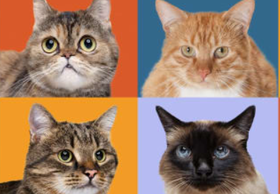

<body>

<div class="container">
  <div class="main-container">

    <div class="content-container">
      <div class="image-container">
        <h1>What Are the Cutest Cat & Kitten Breeds?</h1>
        
      </div>

      <div *ngIf="!isFullTextShown">
        <p>Who doesn’t love petting a cute cat, or cuddling with an adorable kitten? While every feline is fetching in
          his or her own right, there are a few that tend to stand out to the general public.
        </p>

        <p>From distinctive markings to stunning coats and charmingly adorable personalities, check out 10 of the cutest cat breeds around, learn what makes people love these cute kittens, discover a little about their temperaments, and find out which of these pretty cats might be perfect for you.
        </p>

        <h1> 1. Maine Coon</h1>
        <p>Big. Fluffy. Friendly. What’s not to love about this cute cat breed? Maine Coons are known as the gentle giant of the cat world, weighing in around 12 to 15 pounds once fully grown. They get along well with kids and other pets and have a sweet, playful demeanor that makes them an excellent fit for families.
        </p>
        <button (click)="toggleTextDisplay()" class="show-button" mat-button>Show More</button>
      </div>

      <div *ngIf="isFullTextShown">
        <p>Who doesn’t love petting a cute cat, or cuddling with an adorable kitten? While every feline is fetching in
          his or her own right, there are a few that tend to stand out to the general public.
        </p>

        <p>From distinctive markings to stunning coats and charmingly adorable personalities, check out 10 of the cutest cat breeds around, learn what makes people love these cute kittens, discover a little about their temperaments, and find out which of these pretty cats might be perfect for you.
        </p>

        <h1> 1. Maine Coon</h1>
        <p>Big. Fluffy. Friendly. What’s not to love about this cute cat breed? Maine Coons are known as the gentle giant of the cat world, weighing in around 12 to 15 pounds once fully grown. They get along well with kids and other pets and have a sweet, playful demeanor that makes them an excellent fit for families.
        </p>

        <h1> 2. British Shorthair</h1>
        <p>Quiet, dignified and quite adorable, the British Shorthair makes an excellent feline companion. He has a soft, fuzzy coat; sweet, round face; and a personality that’s charming and loyal. He even does well with kids!
        </p>

        <h1> 3. Bengal</h1>
        <p> They may look like miniature versions of their namesake, but Bengals are just as domesticated as any other house cat. Their distinctive stripes and rosettes give them that big-cat look, but their personalities lean a little less wild. They tend to the playful and lively side for felines, but their curiosity and intelligence is just another part of their charm.
        </p>

        <h1> 4. Munchkin</h1>
        <p> Set apart by their low stature and short legs, Munchkin cats are happy, sweet and loving. They can exhibit a variety of coat patterns, including long-haired and short-haired, and they have playful personalities that make them excellent companions.
        </p>

        <h1> 5. Siamese </h1>
        <p> The Siamese is not only adorable but sweet, too. People-oriented, playful and social, these pretty cats are happiest when they’re around family. They’re on the vocal side, as far as cats go, and love being involved in your activities.
        </p>

        <h1> 6. Persian</h1>
        <p> As far as cute cat breeds go, many think of the Persian as the prototypical cute, fluffy, white cat. Calm and docile, they like to play but love to relax, be petted and cuddle up with their humans. These beautiful cats have long, luxurious fur that does require some extra grooming, and a shorter nose that means you’ll need to watch out for any respiratory issues.
        </p>

        <h1> 7. Ragdoll</h1>
        <p> These cute, fluffy cats are calm, laid back and affectionate, making them great family pets. They love being around people, including kids, and typically get along well with other pets. Bonus: Many consider them one of the cutest cat breeds around, thanks to their striking blue eyes and fluffy coat.
        </p>

        <h1> 8. Scottish Fold</h1>
        <p> There are a lot of cute cat breeds, but with his distinctive curled ears, the Scottish Fold certainly catches eyes. This breed is moderately playful and bonds closely with their families, and their temperament is calm and largely undemanding.
        </p>

        <h1> 9. Birman</h1>
        <p>Striking blue eyes, silky coat and a serene demeanor set the Birman apart. This cute cat breed is intelligent and tends to the quieter side, but loves people and exhibits a sweet and agreeable personality.
        </p>

        <h1> 10. Russian Blue</h1>
        <p> The Russian Blue has a stunning silver coat and a winning personality. Moderately active and politely playful, these beautiful cats always look a bit like they are smiling—thanks in part to the slight upturn of their mouths.
        </p>

        <p> Of course, beauty is in the eye of the beholder, and cute cats can come in a variety of shapes, sizes and personality types. Check out a few who are looking for homes right here–who knows? You may find that the cutest kitten breeds might just be those up for adoption near you.
        </p>


        <button (click)="toggleTextDisplay()" class="show-button" mat-button>Show Less</button>
      </div>
      <h2>  Cat or Kitten Breeds </h2>
      <div class="animal-grid">
        <div *ngFor="let dog of cuteDogs" class="animal-card">
          <a (click)="viewDogDetails(dog)">
            
            <h3 class="animal-name"> {{ dog.name }} </h3>
          </a>
          <hr>

          <button (click)="redirectToAnimalPage(dog)" class="animal-available" mat-button> View Adoptable Pets for This
            Breed
          </button>
        </div>
      </div>
    </div>
  </div>
</div>
</body>
